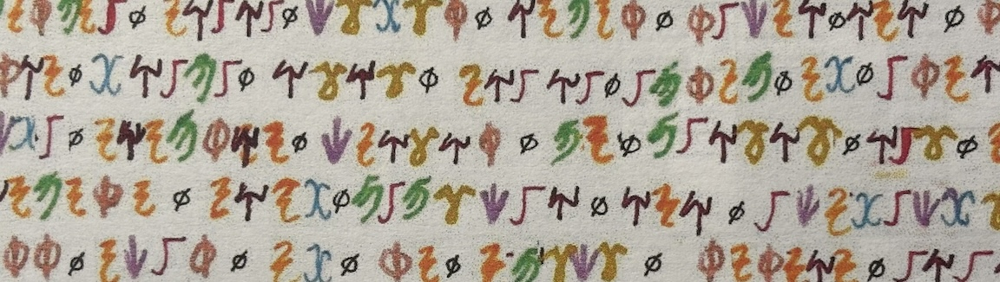

Dream of a Perfect Language
Extremes of Language
Honors Seminars (1998-2020)

I've been running an Honors seminar every few years since 1998 that takes Umberto Eco's The Search for the Perfect Language, as the backbone but adds a lot of wild riffs from linguistics, computer science, cinema, and fiction. Here are a couple typical syllabi.
Image: Sothos Prayer, from Megan Taylor's 2022 NKU Honors Thesis The Constructed Language Ø: Violations of Universal Constraints.